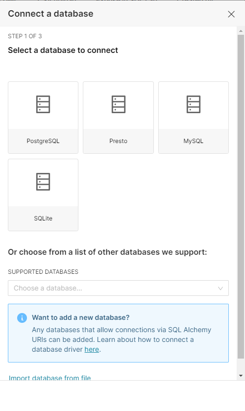
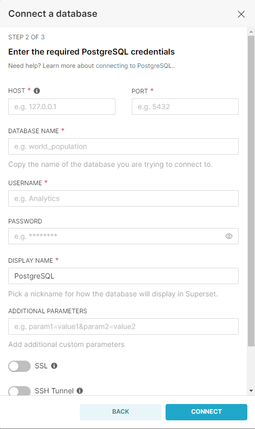

Apache Superset
Apache Superset cannot be integrated with third-party tools, however, new data sources can be integrated into Superset.
Integrating new data sources to Apache Superset
- Apache Superset can ingest data from more than 40 sources.

- Some of the integrations have built-in configuration wizards, as seen in the image below. However, others, only request the connection URL as stated in Superset documentation

- Once you have added the details for the connection, Apache Superset will create a connection test and provide you with feedback on it. If the connection is successful, the new datasets are ready to be used.